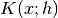
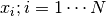
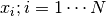
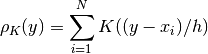
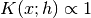
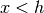
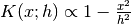
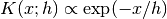
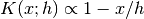
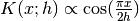

2.8. 概率密度估计 (Density Estimation)¶
概率密度估计可应用到无监督学习(unsupervised learning)，特征工程 (feature engineering)，数据建模 (data modeling)。 其中使用最广泛最有效的概率密度估计方法包括基于混合模型 (mixture models)的方法，比如，高斯混合 (Gaussian Mixtures, sklearn.mixture.GMM)；和基于邻域的方法，比如说核密度估计 (kernel density estimation, sklearn.neighbors.KernelDensity). 高斯混合因为在无监督聚类分析中非常有效，因此在 clustering 中更全面地进行介绍。
概率密度是一个非常简单的概念，而且大多数的人已经对一个概率密度估计方法非常熟悉：频率分布直方图。
2.8.1. 概率密度估计：直方图¶
直方图是数据的一个简单的可视化：我们在直方图中定义了组距和组数，并对每个组中的数据点数进行统计。我们可以在下图的左上角看到直方图的一个例子：
直方图的最大的一个问题是，组距和组数的选择对最终可视化的结果可能会产生负面的效果。现在我们看一下上图右上角。图中可以看到对于相同的数据，当采用适当的组距和组数时，左右两个图将完全不同，这会导致数据的不同解释。
直觉上来说，我们可以认为直方图是块的堆积，每一个数据点对应一个块。通过在适当的网格空间内堆积块，我们可以得到直方图。但是，如果我们不是在规格网格上堆积块，而是我们将每个块放在它所代表的点的中心，计算每个位置高度的总和，那么结果将会怎样？正如左下图所示，这个方式可能没有直方图那么直观，但事实上这个方法中，块的位置由数据驱动，意味着能更好地代表数据的本质结构。
这个图是 核密度估计 的一个例子，它采用了帽顶核 (top-hat kernel，每一个数据点都是一个方块). 我们可以通过使用一个更平滑的核来得到一个更平滑的分布。右下图是一个高斯核概率密度估计，其中每个数据点对最终叠加曲线提供一个高斯分布曲线。它是基于数据的一个平滑概率密度估计，是数据点分布的一个强大的非参数模型。
2.8.2. 核概率密度估计 (Kernel Density Estimation)¶
在scikit-learn中，核概率密度估计是通过 sklearn.neighbors.KernelDensity 进行的， 并使用 Ball Tree 或者 KD Tree 进行有效的查询（详细讨论可参见 最邻近法 ）。尽管为了简化上述例子中使用了一维的数据集，但核概率密度估计原则上可以应用于任意维数的数据。但是在实际应用中，维度诅咒 (the curse of dimensionality) 使其在高维中的性能严重退化。
在下图中，从双峰分布中产生100个样本数据点，使用三种不同的核来估计核概率密度：
我们可以清楚地看到核的形状会影响最终估计的分布的平滑性。 scikit-learn中可以这样使用核概率密度估计：
>>> from sklearn.neighbors.kde import KernelDensity
>>> import numpy as np
>>> X = np.array([[-1, -1], [-2, -1], [-3, -2], [1, 1], [2, 1], [3, 2]])
>>> kde = KernelDensity(kernel='gaussian', bandwidth=0.2).fit(X)
>>> kde.score_samples(X)
array([-0.41075698, -0.41075698, -0.41076071, -0.41075698, -0.41075698,
-0.41076071])
从上面可以看到，我们使用了 kernel='gaussian' 。数学上来说，核是一个正函数  ，由带宽参数  决定。给定核的类型的条件下，任意一点
决定。给定核的类型的条件下，任意一点  在一组点  中的密度估计可以由下式得到：
在一组点  中的密度估计可以由下式得到：

这里带宽是一个平滑参数，控制着结果中偏差和方差的相互平衡。当带宽较大时，可得到非常平滑（即偏差较大）的密度分布；当带宽较小时，得到一个不平滑（即方差较大）的密度分布。
在下图中可以看到，sklearn.neighbors.KernelDensity 采用了几种常规的核的类型：
这些核的类型如下：
高斯核 (
kernel = 'gaussian')
帽顶核 (
kernel = 'tophat') if 
Epanechnikov核 (
kernel = 'epanechnikov') 指数核 (
kernel = 'exponential')
线性核 (
kernel = 'linear') if
Cosine核 (
kernel = 'cosine') if
核概率密度估计可以用在任何有效的距离测度中（可用的距离测列表参见 sklearn.neighbors.DistanceMetric ），但仅对欧几里得测度的结果进行了适当的正则化。一个特别有效的测度是 Haversine distance ，用来测量球体中各个点之间的角距离。下图的例子是用核概率密度估计来对地理空间数据进行可视化，即南美洲大陆上两种不同物种的观测数据的分布：
核概率密度估计的另一个应用是学习一个数据集的非参数生成模型，来有效地从这个生成模型中产生新的样本数据。下图的例子中使用了这个思想，通过基于数据在PCA投射，应用高斯核来产生手写数字的一个新的集合：

“新”的数据包含输入数据的线性组合，其权重从KDE模型中随机产生。
样例：
- Simple 1D Kernel Density Estimation: 在一维空间中计算简单的核概率密度估计。
- Kernel Density Estimation: 本例采用核概率密度估计来产生手写数字数据的生成模型，并从这个模型中抽样新的样本数据。
- Kernel Density Estimate of Species Distributions: 本例采用核概率密度估计来可视化地理空间数据，其中使用了Haversine距离测度。